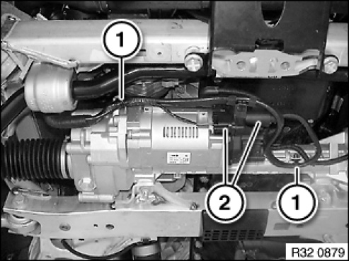
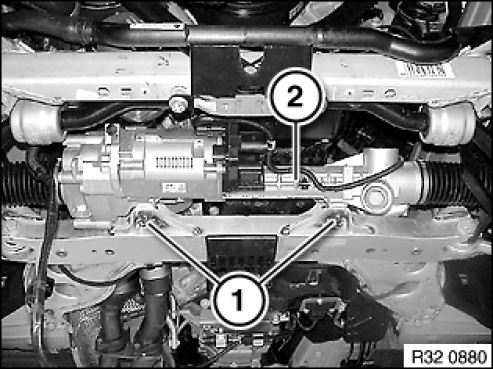
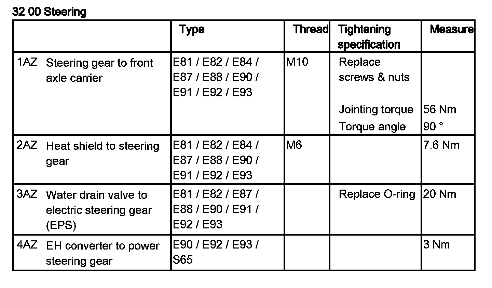
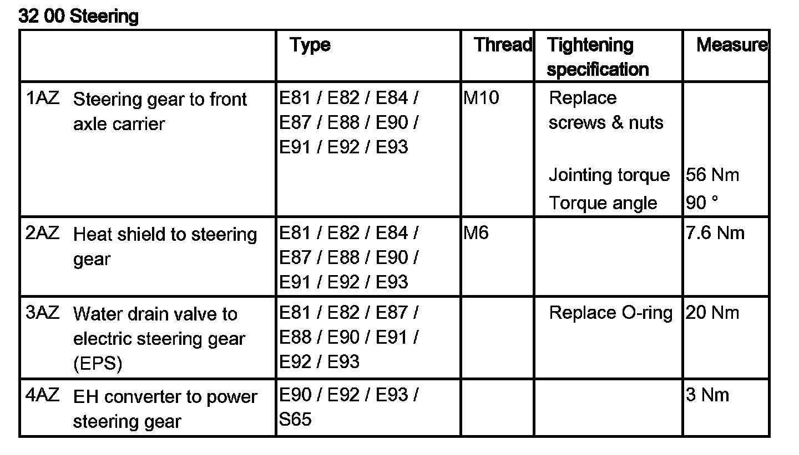
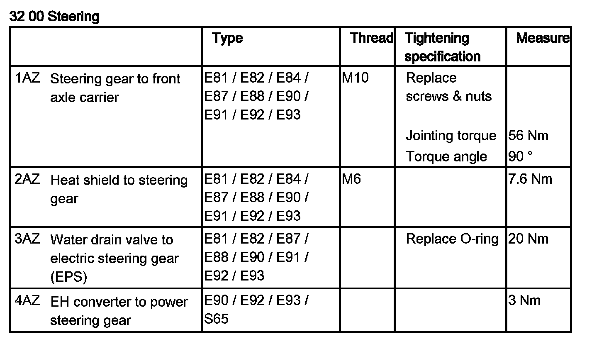
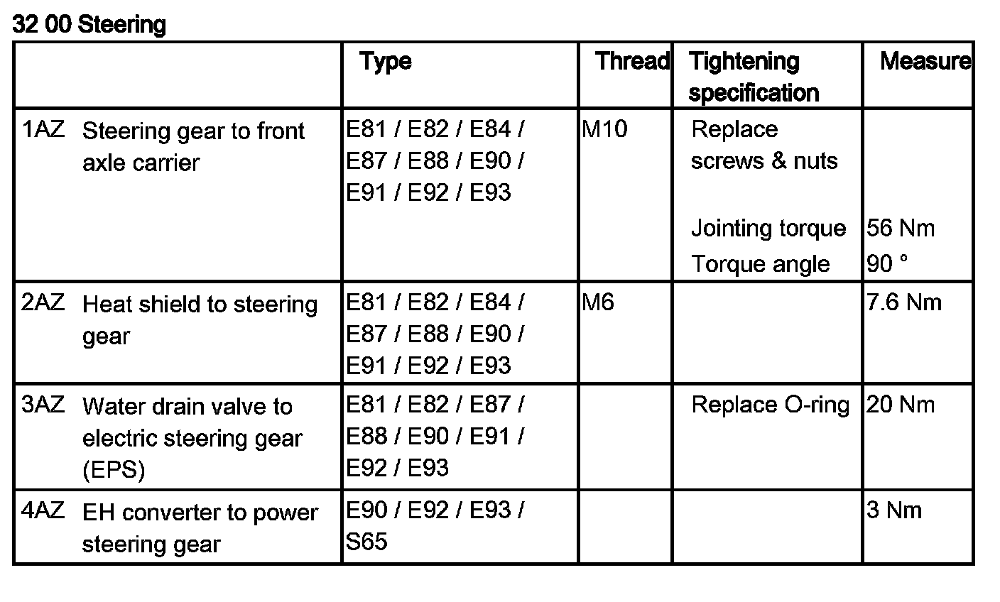
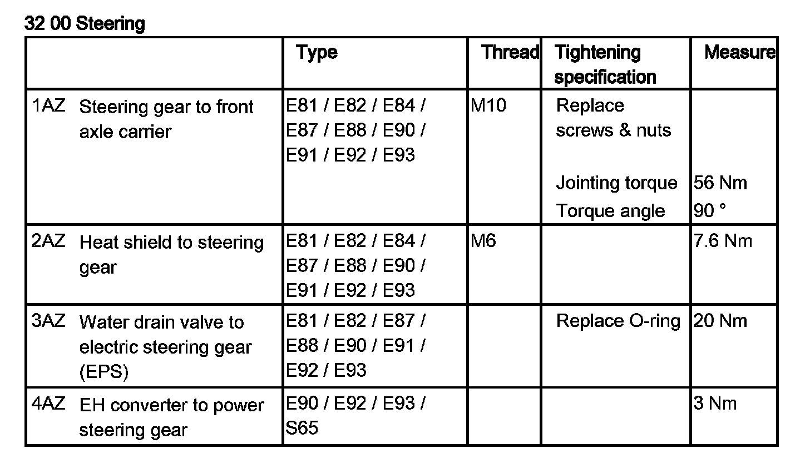

32 13 070 Removing and Installing/Replacing Electric Steering Gear (EPS)
32 13 070 Removing and installing (replacing) electric steering box (EPS)

IMPORTANT:
Steering box:
Check connection of steering box for corrosion, clean contacts if necessary. The steering box must be replaced if the corrosion is too far advanced.
Connecting line:
In the event of moisture/corrosion inside the two plug connections, check the insulation of the connecting line. If the insulation reveals any noticeable/striking features, partial replacement will be necessary. Otherwise it will be sufficient to replace the contacts or connector housing.

NOTE: In a warranty case you must always provide a fault memory printout, even where there is no fault entry, with the defective part.

Necessary preliminary tasks:
- Disconnect battery negative lead
NOTE: High-current-carrying line laid with permanent positive connection (80 A fuse).
- Remove front underbody protection
- E88, E93: Remove V-strut on left and right
- Remove lower section of steering shaft from steering box
- Remove both track rod ends from swivel bearing
- Replacement: Remove both track rod ends from steering gear

Cut open cable strap (1).
Disconnect plug connections (2).
Installation note:
Check plug connections for moisture and corrosion. To do so, read and follow notes/information at the start of the document.
Plug connections must audibly snap into place.
Make sure connecting lead is correctly laid.

Release nuts and remove screws (1) towards bottom.
Remove steering gear (2) forward.
Installation note:
Replace screws and nuts.
Tightening torque 32 00 1AZ.
After installation:
- Replacement: Carry out programming/encoding
- Teach in end stop software
- Perform chassis / wheel alignment check
- Carry out steering angle sensor adjustment





